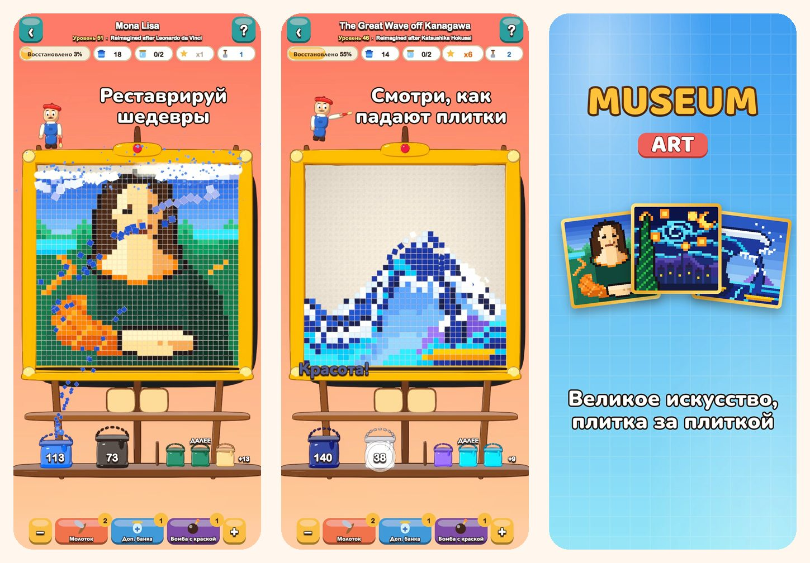

Museum Art
Цветная головоломка в пиксель-арте
Коснись цвета и смотри, как падают плитки. Восстанови 51 картину в пиксель-арте, от «Моны Лизы» до улиц Стамбула, Парижа, Рима и Нью-Йорка.
Загрузите в App Store
Об игре
Каждая картина в Museum Art состоит из цветных квадратных плиток. Убирай их цвет за цветом и смотри, как картина снова оживает.
КАК ИГРАТЬ
- Коснись цветного участка, который касается нижнего ряда, или ведра на полке: плитки летят в своё ведро.
- Плитки сверху осыпаются, как песок, и открывают новые ходы.
- Для цвета ещё нет ведра? Поставь его в банку на подносе.
- Чем реже ты пользуешься подносом, тем больше звёзд получаешь.
51 КАРТИНА ДЛЯ РЕСТАВРАЦИИ
- Яркие и простые сцены для начала: воздушный шар, парусник, кошка и маяк.
- Природа: снежные вершины, горное озеро, цветущая сакура и пустыня в сумерках.
- Кругосветное путешествие по Стамбулу, Парижу, Риму и Нью-Йорку.
- Хранилище мастеров: «Большая волна», «Звёздная ночь», «Кувшинки», «Молочница», «Впечатление. Восходящее солнце» и «Мона Лиза» в новом прочтении в пиксель-арте.
СПОКОЙНО И ЧЕСТНО
- Каждый уровень можно пройти без бустеров, а новая попытка бесплатна.
- Бустеры для трудных моментов: молоток, доп. банка и бомба с краской.
- Приближай детали, когда захочешь.
- Интересный факт о каждой картине.
- Игра на 19 языках.